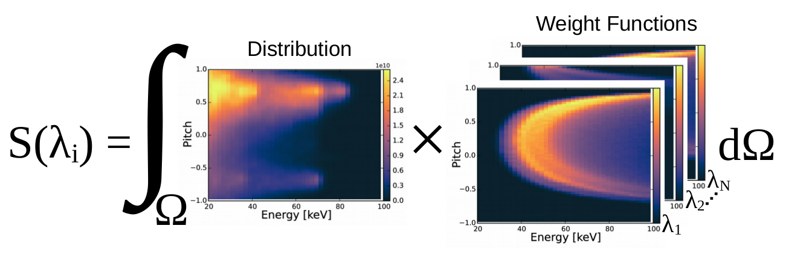

FIDASIM is capable of calculating phase space sensitivities, also known as "weight" functions. These weight functions describe how sensitive a diagnostic is to a region of fast-ion phase space (Energy/pitch). Alternatively, you can think of weight functions as the probability of a region of phase space contributing to the diagnostic signal.
When a weight function is convolved with a theoretical fast-ion distribution, the expected diagnostic signal is calculated. An example of this process is shown below.

FIDASIM can calculate weight functions for the FIDA and NPA diagnostics.
The calculation of the FIDA weight function can be broken up into 3 parts.
The product of these probabilities will be proportional to the FIDA weight function.
The probabilities mentioned above are implicitly local quantities, however, in reality the neutral population and the diagnostic geometry have spatial extent. The (exact) expected FIDA signal is given by
In order to calculate a single representative weight function for a given diagnostic (, spatial averaging is needed.
FIDASIM offers two different ways of calculating the FIDA weight functions; each using a different spatial averaging method.
calc_fida_wght = 1
With this switch the FIDA weight function is calculated using LOS integrated neutral density and weighted plasma parameters given by
where represents the various plasma parameters and distribution function.
Using this method the FIDA spectra can be estimated by
where is the weight function calculated with LOS-averaged quantities and is the LOS-averaged fast-ion distribution function.
calc_fida_wght = 2
With this switch it is assumed that over the line of sight the fast-ion distribution is approximately constant. where and
This method is more computationally intensive and uses a Monte Carlo method which introduces some noise. Regardless, this method is more accurate then the previous method and should be used in analysis where accuracy is paramount, e.g. velocity space tomography.
The FIDA signal produced by calc_fida = 1 will sometimes significantly differ from the estimated FIDA spectra produced by convolving the weight functions with the fast-ion distribution. This is due to the approximations made in the weight function calculation. In general you can use the calc_fida=1 result to test the approximations used by calc_fida_wght=1/2
The calculation of the NPA weight function can be broken up into 3 parts.
The product of these probabilities will be proportional to the NPA weight function.
The probabilities mentioned above are implicitly local quantities, however, in reality the neutral population and the diagnostic geometry have spatial extent. The (exact) expected NPA signal is given by
The NPA weight functions are calculated using the same assumptions as the FIDA weight functions (calc_fida_wght=2).
If calc_npa_wght = 2 is set then the individual compenents of the npa weight function are also outputed.